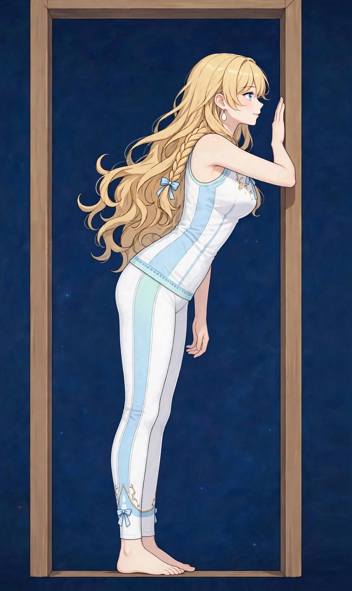

梅田で猫背ケア｜美容整体で背中の丸みと姿勢の印象を整える姿勢・見た目
写真に写った自分の姿勢を見て「こんなに背中が丸かったのか」と驚いた、という声をよく聞きます。猫背は見た目の印象だけでなく、肩や背中の負担ともつながっています。
猫背はどんな状態か
猫背は、背中が丸くカーブし、頭や肩が前に出た姿勢の状態を表す言葉です。写真に写った自分の姿を見て気づく方が多く、見た目の印象だけでなく、肩や背中の張り、呼吸の浅さともつながっています。骨の形そのものが変わっているのではなく、筋肉の張りと支えのバランスが崩れて「丸まりやすい状態」になっている場合がほとんどです。
猫背のポイントは、背中側だけの問題ではないことです。胸の前側が縮こまり、背中側が引き伸ばされ、お腹側の支えが抜ける——この3つがセットになって丸まりが固定されます。背中を無理に反らすのではなく、前後のバランスを整える視点が大切です。
こんなサインはありませんか？ — 猫背のチェックリスト
- 写真で背中の丸みに驚いた
- 姿勢が悪いと言われる
- 肩や背中の張りも一緒に気になる
- 大事な予定の前に姿勢を整えたい
- デスクに肘をつくと背中が丸まりやすい
- 歩くときに視線が下向きになりがちだ
- 仰向けで寝ると背中が浮く感じがする
- 姿勢を正しても数分で元に戻ってしまう
当てはまる項目が多いほど、負担がたまりやすい生活が続いている可能性があります。次の「要因」と見比べて、どこに負担が集まっているか確かめてみてください。
猫背につながりやすい要因
- 画面と前かがみ姿勢の継続：パソコンやスマホへ顔を近づける姿勢が続くと、背中の丸まりがクセとして固定されます。一日の大半を占める姿勢の影響は小さくありません。
- 胸側の縮こまり：胸の前側の筋肉が縮こまると、肩と背中は前へ引っ張られます。猫背の中心的な背景のひとつで、背中だけをほぐしても戻りやすい理由でもあります。
- お腹側の支えの弱さ：体幹の支えが抜けると、骨盤が後ろへ倒れ、背中全体が丸まる形になります。座り姿勢でお尻が前に滑る「仙骨座り」は典型的なパターンです。
- 視線と作業環境：モニターが低い、本が遠いといった環境は、無意識に顔と背中を前へ運びます。姿勢のクセに見えて、環境が作っている部分も多いものです。
- 運動不足：背中や体幹の筋肉が働く機会が減ると、正した姿勢を保つ力そのものが落ちます。保てないから戻る、という循環が猫背を固定します。
- バッグや抱っこの偏り：片側に寄った負担は、背中の左右差と丸まりを強めることがあります。日常の持ち方の偏りも見直しどころです。
図1｜猫背の姿勢で負担が集まる部位（側面）

東洋医学から見た考え方
東洋医学では、姿勢の崩れは全身の巡りやバランスの表れのひとつと捉えます。背中側の張りと胸側の縮こまり、両方のバランスを見ながらケアすることが大切と考えます。
背中の中央を上る督脈は、姿勢の中心軸の見立てで中心的に関連づけられます。督脈は背骨に沿ったラインであり、背中の丸みは全身の巡りの表れのひとつとして捉えます。施術では、背中側の張りと胸側の縮こまりの両方を見ながら、中心軸のバランスを意識してケアします。
代表的なツボ
猫背のケアでよく挙げられる、背中のツボを紹介します。背中は自分で押しにくいため、テニスボールで軽く圧をかける方法が取り入れやすいケアです。
図2｜背中のツボの位置（背面）

おすすめ施術
美容整体
縮こまった胸まわりをほぐし、背中の筋肉のバランスを整えながら、姿勢のクセを一緒に確認します。施術後に鏡で姿勢を見比べる時間も大切にしています。
進め方は、まず縮こまった胸まわりをほぐし、背中の筋肉の張りとのバランスを整えながら、姿勢のクセを一緒に確認していく流れです。施術後に鏡で姿勢を見比べる時間も大切にしています。背中を強く反らせるような施術ではなく、前後のバランスが変わることで自然に伸びやすい状態を作ります。
オイルマッサージとの組み合わせも可能です。猫背は時間をかけて固定されてきたクセのため、施術と日常のセルフケアを組み合わせる継続的な視点もお伝えしています。
自宅でできるセルフケア
猫背のセルフケアは「胸を開く・背中を動かす・座り方を直す」の組み合わせが基本です。痛みやしびれが出る場合は無理をせず中止し、続く場合は医療機関にご相談ください。
- 1．ドア枠ストレッチドアの枠に前腕をつけ、体を少し前に進めて胸を開くストレッチを左右30秒ずつ。縮こまった前面を伸ばすことが、背中の丸まりを戻す近道です。
- 2．肩甲骨寄せ椅子に座って両肘を後ろへ引き、肩甲骨を寄せて5秒キープ、を5回。背中側の支えを働かせる動きで、デスクワークの合間にも行いやすいケアです。
- 3．座り方のリセット椅子に深く腰掛け、お尻の骨（坐骨）で座る意識を持ちます。お尻が前に滑る仙骨座りになっていたら、一度立って座り直すことがいちばんの対策です。
- 4．壁立ちチェック壁に後頭部・背中・かかとをつけて立ち、姿勢の基準を確認します。毎日1分、鏡や壁で自分の姿勢を「見る」習慣が、クセへの気づきを育てます。
図3｜セルフケア「ドア枠ストレッチ」の手順

場面別の注意
デスクワーク中
モニターの高さと椅子の座り方が、猫背の土台を作ります。画面は目線の高さに、椅子は深く腰掛けることを目安に。1時間に一度の肩甲骨寄せも挟んでください。
写真や人前に出る予定の前
大事な予定の前は、施術で前後のバランスを整え、当日は壁立ちで基準を確認する使い方がおすすめです。姿勢の印象は、直前の意識でも変わります。
スマホを使うとき
うつむき姿勢は背中の丸まりを深めます。スマホを目線の高さへ上げる工夫と、操作を区切る習慣を組み合わせてください。
受診の目安
次のような場合は、サロンでのケアの前に医療機関への受診をおすすめします。
- 背中の痛みに加えて、腕や脚にしびれがある
- 背骨の変形を指摘されたことがあり、痛みが増えている
- 転倒や事故のあとから姿勢や痛みが変わった
- 発熱や体重の急な減少を伴っている
- 痛みが日に日に強くなっている
当店は医療機関ではなく、診断は行いません。迷うときは、まずかかりつけの医療機関にご相談ください。
よくある質問
Q．猫背は一回で変わりますか？
姿勢のクセは時間をかけて固定されてきたもののため、一回の施術だけで大きく変わるものではありません。当店では、施術で前後のバランスを整え、日常のセルフケアと組み合わせて付き合っていく考え方をお伝えしています。
Q．施術後に姿勢の変化は確認できますか？
はい。施術の前後で鏡の前に立っていただき、姿勢の感じを一緒に確認する時間を大切にしています。写真での記録をご希望の場合はお声がけください。
Q．巻き肩との違いは何ですか？
猫背は背中の丸みが中心、巻き肩は肩の位置が前へ入る状態が中心です。両方が重なっている方も多く、当日の状態を見て配分を調整します。関連ページの巻き肩もあわせてご覧ください。
Q．自宅で続けるコツはありますか？
ドア枠ストレッチなど、場所が決まった動きは続けやすいケアです。「帰宅したら玄関で」など、行動にくっつける工夫も施術の前後にお伝えできます。
関連するお悩みページ
関連する経絡ページ
ご予約
ステラポラリス（大阪・梅田／女性専用）｜オイルマッサージ 90分 10,000円｜月〜土 17:00〜22:00・完全予約制
ご予約はLINE公式アカウントで受け付けています。希望の日時と、気になる場所を送ってください。